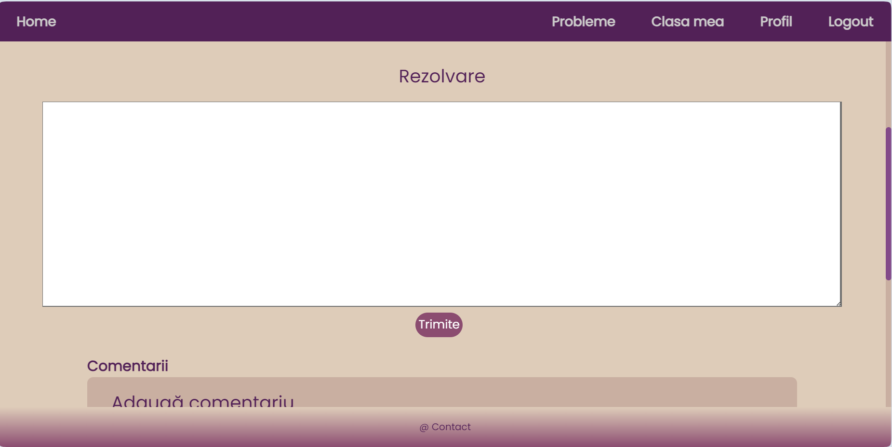

Cerințele site-ului
1. Introducere
1.1. Scop
Scopul aplicației "InformatiX" este de a furniza un mediu interactiv și educațional pentru elevii de gimnaziu și liceu, pentru învățarea programării prin intermediul rezolvării de probleme. Utilizatorii vor avea acces la o varietate de probleme propuse de profesori, clasificate în funcție de nivelul de studiu (clasa 9/10/11), de dificultate (probleme ușoare, medii, dificile), și de capitolul pe care se bazează problema (backtracking, șiruri de caractere etc.). Elevii pot vizualiza aceste probleme atât înregistrați, cât și fără a fi înregistrați, iar rezolvarea acestora presupune apartenența la o clasă cu un profesor asignat și trimiterea soluțiilor respective spre a fi corectate de către profesor. Aceștia vor putea lasa comentarii pentru colegi la fiecare problemă și vor putea oferi un rating de la 1 la 5 stele pentru aceasta. Fiecare problemă poate fi exportată folosind butonul de share. Profesorii vor avea posibilitatea să creeze și să administreze clase, să adauge elevi în aceste clase și să atribuie teme elevilor prin selectarea de probleme existente în aplicație. Ei vor putea, de asemenea, să evalueze soluțiile trimise de elevi și să ofere feedback individual. Pe lângă funcționalitatea de bază, aplicația va genera rapoarte care oferă statistici detaliate pentru utilizatori, cum ar fi numărul total de probleme rezolvate, câte dintre acestea au fost corecte și câte au fost încercate. De asemenea, vor exista rapoarte pentru fiecare problemă în parte, care vor oferi informații despre numărul de utilizatori care au încercat-o, câți au reușit să o rezolve și ratingul care a fost acordat de elevi.
Astfel, pe lângă scopul de a furniza un mediu interactiv și eficient pentru învățarea și practicarea programării pentru elevii de liceu, aplicația facilitează comunicarea și colaborarea între elevi și profesori și oferă o modalitate utilă pentru evaluarea și monitorizarea progresului în învățare.
1.2. Publicul vizat
Platforma noastră va fi destinată în primul rând elevilor care studiază informatica în liceu și gimnaziu, studenților care doresc să aprofundeze noțiunile prin exersare, și până la urmă oricăror pasionați care își doresc să învețe mai mult. Administratorii paginii vor avea orice rol, se vor asigura de buna funcționare a site-ului și că legătura elevi-profesor implică o comunicare eficientă. Nu în ultimul rând, profesorul, este cel care evaluează elevii, le propune teme, comunică cu aceștia prin intermediul platformei despre soluții optime la rezolvări. Platforma este una potrivită atât pentru elevii care doresc să lucreze cât mai mult, cât și pentru profesori pentru a evalua cât mai ușor munca elevilor.
1.3. Product scope
Obiectivul major este de a sprijini educația și dezvoltarea competențelor tehnice în rândul tinerilor, pregătindu-i pentru oportunități viitoare în domeniul tehnologiei și informaticii.
Funcționalitățile majore ale aplicației sunt:
Propunerea și Aprobarea de Probleme:
Profesorii pot propune probleme informatice care vor fi supuse aprobării administratorilor. Aceste probleme pot fi etichetate cu diverse TAG-uri.
Crearea și Gestionarea Claselor:
Profesorii pot crea clase și adăuga elevii în aceste clase folosind identificatori precum id-ul, care se regăsește pe pagina profilului.
Atribuirea de Teme:
Profesorii pot atribui teme elevilor propunând probleme selectate din baza de date existentă.
Rezolvarea Problemelor și Evaluarea:
Elevii pot rezolva problemele și pot trimite soluțiile lor pentru evaluare de către profesor. De asemenea, ei pot oferi comentarii și ponturi colegilor sau pot marca problemele cu un număr de stele pentru a indica nivelul lor de dificultate sau calitate.
Profesorii pot evalua soluțiile trimise de elevi și pot oferi feedback individual. Ei vor oferi o notă de la 1 la 10 și un comentariu de feedback fiecărui elev per problemă.
Accesibilitatea prin API și Export de Probleme:
Problemele pot fi accesate de alte aplicații web prin intermediul unui API, iar problemele pot fi exportate în formate deschise, cum ar fi JSON, prin butonul de "share".
2. Prezentarea aplicației
2.1. Arhitectura abordată
Aplicația dezvoltă o structură ușor de înțeles, bine implementată și care facilitează comunicarea dintre componenta de frontend (la nivelul interfeței de utilizator) și cea de backend (la nivel de server). S-a adoptat un design-pattern arhitectural, Model-View-Controller, motivația venind din ideea de a separa logica de prezentare a datelor (Model), interfața utilizatorului (View) și logica de control a aplicației (Controller). Cele 3 componente facilitează întreținerea codului, permit un acces mai controlat în cadrul fișierelor și sunt ușor de înțeles.
2.2. Structura fișierelor
Așa cum s-a menționat anterior despre modelul MVC, aplicația are în componență 2 foldere esențiale: "src" - care deține logica de structurare din cadrul arhitecturii, și "public" - care conține elementele statice - și anume fișierele .css specifice paginilor, imagini, fonturi, favicons etc.

2.3. Cum funcționează procesul de logare
Procesul de logare este unul simplu și eficient, utilizatorul trebuie să introducă datele de autentificare (username și parolă) în formularul de login. După ce acestea sunt completate, datele sunt trimise către server, unde se face verificarea în baza de date. În cazul în care datele sunt corecte, utilizatorul este redirecționat către pagina principală a aplicației, unde își poate accesa informațiile personale, poate rezolva probleme sau poate accesa alte funcționalități ale aplicației.
2.4. Interfața utilizatorului
Pagina de index
Pagina de "index" a aplicației oferă o scurtă descriere a site-ului și a facilităților lui, răspunde la câteva dintre curiozitățile cele mai mari ale unui utilizator nou și de asemenea permite utilizatorilor să se logheze în aplicație sau să-și facă un cont nou. S-a utilizat modul de derulare prin slide-uri a conținutului, celelalte pagini păstrând varianta clasică de scroll.
Formularul de login este adresat oricărui tip de utilizator; în urma completării acestuia se vor face verificările în baza de date și utilizatorul va avea acces la cont. Similar și pentru meniul de înregistrare.

Meniul de înregistrare va fi adresat doar utilizatorilor de tip "elevi", iar mai apoi un user "elev" poate da upgrade la "profesor" în urma completării unui formular care va fi verificat de administratori. Rolul de administrator este unul privilegiat, deținut de owner-ul produsului software.

Pentru opțiunea de Forgot Password se va trimite un mail la adresa furnizată pentru a se putea reseta.
În urma realizării cu succes a procesului de logare, utilizatorul va fi redirecționat către pagina "logged-page", mai pe scurt meniul principal care leagă celelalte pagini între ele într-o structură arborescentă.

Pagina conține o abstractizare a principalelor funcționalități ale produsului software, afișate în secțiuni în cadrul paginii. Contând foarte mult modul de detaliere a funcționalităților aplicației web, s-a ales acest mod de afișare a secțiunilor pe pagină și practic așa ne asigurăm că un utilizator nou înregistrat va avea acces la toate informațiile de care are nevoie să se acomodeze cu modul de lucru. Considerăm că un meniu detaliat (în care să se menționeze cât mai multe detalii despre site) atinge orice obiective din partea producătorilor software.
Navbar-ul, specific header-ului, reprezintă "harta de navigare" din cadrul aplicației. Acesta are caracter static, elementele din Navbar-ul vizibile din orice pagină a utilizatorului logat, și este dezvoltat responsive în crearea unui "menu-button" specific dispozitivelor cu rezoluție mai mică.

Pagina de profil
Această pagină, indispensabilă aplicației, reprezintă modalitatea prin care utilizatorul își poate vizualiza datele personale din cont, poate efectua anumite modificări care ulterior vor fi transmise către baza de date, poate să-și modifice parola, și poate transmite un formular către administrator prin care solicită rol de profesor, cu dovadă. Totodată, în secțiunea de profil, un utilizator poate să-și verifice statisticile: câte probleme a rezolvat, câte a încercat, și apoi să-și planifice singur ce ar mai putea rezolva sau primi din partea profesorului. Aici se regasesc si optiunile de switch to teacher, unde un cont de elev poate solicita rol de profesor, si de modificare a parolei.
Pagina de probleme

În cadrul secțiunii de probleme, userul poate naviga către pagina specifică oricărei probleme, îi poate vizualiza enunțul, și mai apoi o poate rezolva în cadrul clasei virtuale de care ar aparține. Problemele au un anumit tag (de ex #2222), o categorie din informatică pe baza căreia vor fi afișate în pagină, și nivelul de studiu specific: clasa 9, clasa 10 sau clasa 11. Am ales această clasificare pentru a facilita modul de căutare al problemelor. Cerința majoră a aplicației stând în modul cum elevii ar putea rezolva probleme, iar profesorii evaluează și acordă note, am tratat detaliat aceste pagini specifice.
Pagina de mai jos se regăsește în una dintre categoriile selectate. Acest mod afișează într-un format elegant toate categoriile de probleme, iar pe fiecare din aceste categorii găsindu-se mai multe probleme. Pentru fiecare problemă se va putea vizualiza separat anumite statistici care țin de rating-ul oferit de elevi, de câți utilizatori au încercat să o rezolve și câți au rezolvat-o cu succes.


Butonul de share este asignat exportului într-un format open (JSON).
Meniul cu titlul "Adaugă o problemă" este destinat doar rolului de profesor pentru ca aceștia să poată propune probleme spre a fi înregistrate în sistem și ulterior rezolvate de elevi. Se consideră adminul că are orice rol. În general, la un produs software nu este suficient doar să fie în funcțiune și atât, mentenanța și întreținerea acestei aplicații fiind una deosebit de importantă. De aceea, diversitatea de probleme, precum și alte avantaje ale aplicației, vor veni din partea sprijinului profesorilor. Prin "Submit" (apăsarea butonului), profesorii s-au asigurat că datele introduse sunt corecte și sunt de acord cu politica de validare a problemelor, conform statutului de admin - care deține și un rol de a accepta cererea de introducere a problemei în sistem.
Clasele mele

În cadrul acestei componente a aplicației este realizată interacțiunea dintre elevi și profesor. Conform cerințelor, un profesor poate deține una sau mai multe clase, acesta având un rol de a manageria clasa/clasele respective și de a lucra eficient cu elevii săi. De asemenea, un elev poate aparține la mai multe clase, acesta rezolvând independent temele pentru o clasă față de cealaltă. Am optat în modul acesta de preferințe deoarece, în practică un elev ar putea aparține de clasa la care studiază, și totodată se mai poate crea o clasă pentru elevii care participă la concursuri și olimpiade și de care elevul să aparțină simultan. Profesorul este cel care adaugă elevi într-o clasă pe baza username-ului. Tot acesta, apăsând pe butonul + poate crea o nouă clasă.

Apăsând pe fiecare clasă, profesorul poate vizualiza elevii, poate adăuga alți elevi și poate accesa secțiunea de teme pentru clasa respectivă.
Strâns legată de componenta claselor este pagina cu "Temele mele", unde un profesor fie poate propune probleme spre rezolvare, fie poate să aleagă din lista de probleme existente în sistem. O temă are un anumit deadline, poate fi pe parcurs modificată prin adăugarea de alte probleme, se vor putea adăuga comentarii din partea tuturor membrilor clasei respective, iar în urma finalizării termenului-limită, profesorul poate accesa secțiunea cu răspunsurile primite la probleme și să evalueze munca elevilor, lăsând și feedback la fiecare problemă rezolvată de aceștia.
Butonul de Evaluare presupune vizualizarea soluțiilor parțiale sau finale încărcate de elevi, profesorul având posibilitatea pe parcurs să poată da indicații sau să evalueze problemele primite, chiar dacă termenului-limită nu este sfârșit.
Adăugarea unei noi teme este un proces explicit, desfășurat de către profesor. Acesta va selecta numele pentru tema specifică și va stabili un termen-limită, care nu va elimina tema chiar dacă acesta este atins. Totuși, termenul-limită este un indicator util pentru profesor, ajutându-l să-și organizeze eficient activitățile și să gestioneze corespunzător soluțiile trimise de elevi în vederea evaluării. Temele vor apărea ordonate după deadline-ul lor, cele expirate fiind în josul secțiunii. Este important de menționat că aplicația este concepută pentru a fi accesibilă oricui, incluzând posibilitatea existenței claselor neoficiale (de exemplu grupele pentru centrele de excelență sau olimpiade), unde modalitățile de lucru pot fi diverse, conform preferințelor fiecăruia. Principalul accent se pune pe rezultatele obținute și pe eficiența pe care platforma o oferă în contextul educațional.
Procesul de adăugare a unei probleme în cadrul unei teme (prin apăsarea butonului specific) constituie un traseu inițiat de sistemul de gestiune a bazei de date. Acesta începe prin căutarea problemei după identificatorul unic (ID). După identificarea problemei, sistemul returnează răspunsul corespunzător către interfața de utilizator (frontend). În același timp, se activează funcțiile dedicate pentru prezentarea conținutului specific asociat problemei în cadrul paginii respective.

În secțiunea de evaluare, profesorul poate vedea soluțiile parțiale, respectiv finale, pentru fiecare utilizator în pagini web diferite.
În cadrul paginii de evaluare pentru un utilizator, membru clasei pentru care profesorul face verificarea soluțiilor, profesorul primește enunțul problemei, codul sursă aferent, urmând apoi să efectueze verificările, și apoi poate încărca evaluarea pe server, elevul primind răspunsul (comentariul) și punctajul acordat, iar pentru server se va face un update la statisticile problemei respective pentru încă un user care a încercat să o rezolve și în situație favorabilă, este marcată ca și rezolvată cu punctaj maxim.
Important de menționat este că în această secțiune are acces și un admin, deoarece un admin poate fi și profesor, iar elevilor nu li se va afișa în interfață acest meniu.

Interfața de user (elev), are mai multe restrângeri care au fost discutate anterior, iar una foarte importantă la nivel de interfață este la modul cum acesta poate rezolva și trimite o problemă. Prin intermediul de cod JavaScript se creează anumite verificări în funcție de tipul de user, și apoi display-ul anumitor componente HTML se face după constrângerile impuse.
În această pagină, utilizatorul poate vizualiza conținutul problemei, poate trimite soluția dacă acesta este sigur pe ce a lucrat, și tot în această secțiune poate încărca anumite comentarii care pot fi văzute de toți membrii clasei și unde se pot oferi hint-uri pentru rezolvarea problemei, precum și alte comentarii. Poate vedea feedback-ul profesorului și punctajul acordat. Poate oferi rating la problemă.
Așa cum am menționat, contul de admin vine cu câteva funcționalități în plus, pe lângă cele ale profesorului. Userul cu rol de admin poate aproba sau respinge problemele propuse, poate aproba sau respinge cererile pentru conturile de profesor evaluând documentele primite, se ocupă de gestionarea conturilor din baza de date.
2.5 Responsive
Aplicația este dezvoltată într-un mod responsive, astfel încât să poată fi accesată de pe orice dispozitiv, indiferent de rezoluție. Elementele de pe pagină se adaptează în funcție de dimensiunea ecranului, iar meniul de navigare este optimizat pentru dispozitivele mobile. De asemenea, butoanele și formularele sunt ușor de utilizat și de pe dispozitivele mobile. Toate dispozitivele incluse în opțiunile din prima imagine de mai jos au o interfață responsive pentru toate paginile.


2.6. Arhitectura și Componenta Tehnică
Aplicația este dezvoltată folosind NodeJS, HTML, CSS, JavaScript si MySQL2. NodeJS folosește un model de I/O non-blocat bazat pe evenimente, ceea ce înseamnă că poate gestiona un număr mare de conexiuni simultane cu o latență minimă și un consum redus de resurse. Acest aspect este esențial pentru aplicații care necesită scalabilitate și performanță ridicată, cum ar fi cele care implică numeroase operațiuni de citire și scriere în baza de date sau care au mulți utilizatori activi. Folosind JavaScript atât pe server (cu NodeJS) cât și pe client, se asigură o continuitate în cod și logică. Aceasta simplifică procesul de dezvoltare, deoarece dezvoltatorii pot folosi același limbaj pe ambele părți, reducând curba de învățare și facilitând întreținerea codului.Codul JavaScript poate fi partajat între front-end și back-end, permițând reutilizarea componentelor și modulelor comune. NodeJS vine cu NPM, un manager de pachete care oferă acces la o vastă colecție de biblioteci și module open-source. NodeJS evoluează constant și rămâne relevant în peisajul tehnologic. NodeJS folosește un singur thread pentru a gestiona multiple conexiuni concurrente, folosind bucla de evenimente (event loop). Aceasta reduce overhead-ul asociat cu gestionarea thread-urilor multiple și îmbunătățește eficiența aplicației.
2.6.1. Baza de date
Am optat pentru MySQL2 din mai multe considerente. MySQL2 este cunoscut pentru performanța sa înaltă, fiind capabil să gestioneze un număr mare de interogări pe secundă. Acest lucru este esențial pentru aplicațiile web care trebuie să servească mulți utilizatori simultan. MySQL2 este optimizat pentru a funcționa cu NodeJS, oferind un driver ușor de utilizat și eficient. Modulul MySQL2 pentru NodeJS oferă o interfață modernă și ușor de utilizat, compatibilă cu promisiuni(promise) și async/await, facilitând scrierea de cod asincron curat și eficient. asigură durabilitatea datelor prin mecanisme robuste de jurnalizare și replicare. Aceasta înseamnă că datele sunt protejate împotriva pierderii în cazul unor erori de sistem sau de hardware. MySQL2 oferă funcționalități avansate de securitate, inclusiv autentificare puternică, control detaliat al accesului și criptare a datelor în tranzit și la repaus. Aceste măsuri sunt esențiale pentru protejarea datelor sensibile ale utilizatorilor. Oferă soluții eficiente de backup și restaurare, asigurând că datele pot fi recuperate rapid în cazul unui dezastru. Motorul de interogare al MySQL2 este foarte performant, având capabilități avansate de optimizare a interogărilor, ceea ce reduce timpul de răspuns și îmbunătățește experiența utilizatorului.
2.6.2. API
Aplicatia noastra ofera un API RESTful care permite accesul la resursele aplicatiei prin intermediul unor cereri HTTP. API-ul este proiectat pentru a fi ușor de utilizat și de înțeles, permițând dezvoltatorilor să integreze ușor aplicația noastră cu alte aplicații sau servicii. API-ul oferă acces la o gamă largă de funcționalități, inclusiv gestionarea problemelor și temelor, evaluarea soluțiilor, gestionarea claselor, statistici despre probleme.
2.6.3. Servicii
În cadrul aplicației noastre, am implementat diverse servicii care sunt responsabile pentru gestionarea funcționalităților specifice. Aceste servicii sunt concepute pentru a fi independente și reutilizabile, fiecare abordând un aspect particular al aplicației. Serviciul de Autentificare (AuthenticationService): Responsabilități: Gestionarea procesului de autentificare a utilizatorilor, verificarea identității acestora, generarea și validarea token-urilor JWT. Implementare: Folosește jsonwebtoken pentru a crea și verifica token-uri JWT care sunt stocate în cookies HttpOnly pentru securitate sporită. Beneficii: Asigură că doar utilizatorii autentificați pot accesa resursele protejate ale aplicației, prevenind accesul neautorizat. Serviciul de Gestionare a Utilizatorilor (UserService): Responsabilități: Gestionarea operațiunilor legate de utilizatori, cum ar fi înregistrarea, actualizarea profilului, și recuperarea parolelor. Implementare: Utilizează operații CRUD pe baza de date MySQL2 pentru a stoca și manipula datele utilizatorilor. Beneficii: Simplifică gestionarea utilizatorilor și asigură integritatea datelor acestora. Serviciul de Gestionare a Problemelor (ProblemService): Responsabilități: Gestionarea problemelor informatice, inclusiv adăugarea, rezolvarea, aprobarea, precum și etichetarea acestora, rating si statistici. Implementare: Permite profesorilor să propună probleme și adminilor să le aprobe, asigurând un flux de lucru controlat pentru validarea conținutului. Beneficii: Asigură că doar problemele aprobate sunt disponibile elevilor pentru rezolvare. Serviciul de Gestionare a Claselor si cel al Temelor (ClassesService si TemeService): Responsabilități: Gestionarea claselor și a relațiilor dintre profesori și elevi, inclusiv adăugarea elevilor în clase și atribuirile de teme. Implementare: Permite crearea, modificarea și ștergerea claselor, și gestionarea elevilor din aceste clase. Beneficii: Facilitează organizarea elevilor și temelor, îmbunătățind gestionarea educațională.
2.6.4. Ajax
În cadrul aplicației noastre, Ajax și async/await sunt folosite pentru a realiza o experiență de utilizare fluidă și dinamică, permițând actualizarea conținutului paginii fără necesitatea de a o reîncărca complet. Această abordare îmbunătățește performanța aplicației și reduce timpul de așteptare pentru utilizatori. Ajax este utilizat în diverse părți ale aplicației noastre pentru a gestiona cererile către server fără a întrerupe experiența utilizatorului. Câteva exemple: Autentificare și Înregistrare: Formularul de autentificare și cel de înregistrare trimit cereri asincrone către server pentru a verifica credențialele utilizatorilor. Dacă datele sunt corecte, utilizatorul este autentificat și redirecționat fără a reîncărca pagina. Adăugarea și Gestionarea Temelor: Profesorii pot adăuga teme pentru elevi, iar aceste cereri sunt trimise asincron către server, care actualizează baza de date și returnează răspunsul fără a reîncărca pagina. Evaluarea și Feedback-ul Problemelor: Profesorii pot evalua soluțiile trimise de elevi și pot trimite feedback folosind cereri Ajax, actualizând baza de date și informând elevii despre evaluările primite în timp real.
2.6.5. Modul HTTP
În proiectul nostru, am folosit modulul HTTP pentru a crea un server care să gestioneze cererile HTTP. Acesta primește cererile de la client, procesează datele și trimite răspunsurile corespunzătoare. Am definit o serie de rute pentru a gestiona diferite tipuri de cereri HTTP. Aceste rute specifică ce trebuie să facă serverul atunci când primește o anumită cerere. Modulul HTTP gestionează cererile ce necesită autentificare prin verificarea tokenurilor JWT. Acest lucru asigură că doar utilizatorii autentificați pot accesa anumite rute și funcționalități.
2.6.7. Export in format open si Incarcare de fisiere
Aplicatia noastra permite exportarea problemelor in format JSON, pentru a facilita partajarea si colaborarea intre utilizatori. Atunci cand un utilizator doreste sa exporte o problema, serverul genereaza un fisier JSON care contine informatiile necesare despre problema respectiva. Acest fisier este apoi trimis clientului pentru a fi descarcat. Pentru a permite utilizatorilor sa incarce fisiere, am folosit modulul Multer, care faciliteaza incarcarea de fisiere in aplicatii Node.js. Atunci cand un utilizator incarca un fisier, acesta este trimis catre server, care il salveaza pe disk. Informatiile despre fisier sunt apoi stocate in baza de date pentru a fi accesate ulterior.
3. Paleta de culori și familia de fonturi
3.1. Paleta de culori
Paleta de culori aleasă se bazează pe nuanțe de violet și nuanțe bazate pe complementara sa (galben), împreună cu clasicele alb și negru. Motivația din spatele acestei alegeri este faptul că violetul este o culoare vizibilă, puternică, închisă și contrastantă împreună cu galbenul. Violetul este cunoscut ca fiind o culoare ce stimulează concentrarea și învățarea și captează atenția utilizatorului spre deosebire de alte culori mai fade. Combinate, culorile din această paletă oferă o multitudine de combinații în ceea ce privește gradienturile și alte efecte vizuale atractive pentru utilizatori. Am luat în considerare și persoanele color-blind, contrastul fiind vizibil și pentru acestea.

3.2. Familia de fonturi
Familia de fonturi aleasă este Poppins. Poppins este o tipografie versatilă care a câștigat popularitate din mai multe motive:
Stil Geometric Sans Serif: Poppins aparține categoriei de tipografii sans serif geometrice, cunoscută pentru liniile curate și proporțiile echilibrate. Îmbină estetica modernă cu o notă de sofisticare.
Suport pentru mai multe sisteme de scriere: Poppins susține atât sistemul de scriere Devanagari (folosit pentru limbi precum hindi, marathi și sanscrită), cât și cel latin. Acest lucru o face o adiție internațională la gen.
Geometrie pură: Designul lui Poppins se bazează pe geometria pură, în special cercuri. Fiecare literă este aproape monolineară, rezultând într-o culoare tipografică constantă. Caracterele Devanagari sunt, de asemenea, construite geometric.
Gamă de greutăți: Poppins oferă o gamă largă de greutăți de fonturi, de la subțire la negru. Această versatilitate permite designerilor să o utilizeze în diverse scopuri, inclusiv titluri, text principal și branding.
Echilibrată și prietenoasă: Caracterul său este descris ca fiind prietenos, echilibrat și accesibil. Indiferent dacă proiectați logo-uri, site-uri web, reviste sau aplicații, Poppins oferă un aspect contemporan și profesional.
Din aceste motive, am considerat că Poppins este un font potrivit pentru învățatul cu plăcere, fiind vizibil, lizibil, sofisticat, dar și modern. Nu are un aspect dur și este potrivit în primul rând pentru a capta atenția și a stârni interesul elevilor.
4. Alte cerințe non-funcționale
4.1. Securitate
Cerințele de securitate includ implementarea unui sistem robust de autentificare și autorizare pentru utilizatori. Acest sistem folosește un JWT pentru autentificare și pentru resetare de parole, respectiv logout, care este stocat într-un cookie HttpOnly, prevenind atacuri XSS. Datele cu caracter personal și sensibile, cum ar fi parolele, sunt criptate folosind bcrypt. Aplicația este protejată împotriva SQL injections, folosind prepared statements și query params și făcând verificări detaliate.

În plus, sunt impuse restricții de acces la anumite funcționalități sau date în funcție de rolurile utilizatorilor, iar activitățile suspecte trebuie să fie monitorizate și înregistrate pentru a detecta eventualele încercări de acces neautorizat. Administratorii sunt singurii cu acces la pagina de administrare și toate funcționalitățile acesteia (gestionarea conturilor, mesajele de feedback, aprobarea problemelor). Profesorii și adminii sunt singurii care pot da teme, pot crea clase și pot adăuga elevi în ele, pot corecta teme și oferi feedback și punctaje, pot propune probleme noi. Elevii sunt cei care vor primi aceste teme și vor fi incluși în clasele menționate, vor rezolva problemele și vor putea lăsa comentarii la ele pentru ceilalți colegi. Doar adminul poate gestiona conturile și aproba cereri pentru probleme sau pentru un cont de profesor.
4.2. Performanță
Cerințele de performanță sunt legate de timpul de încărcare al paginilor și de timpul de răspuns al aplicației în timpul utilizării. Pentru a asigura o experiență fluidă utilizatorilor, aplicația este optimizată pentru a funcționa rapid și eficient, chiar și în condiții de trafic intens.
Aceasta implică optimizarea codului pentru a reduce timpul de procesare și de încărcare a paginilor și reducerea la minimum a solicitărilor de rețea prin combinarea și minimizarea fișierelor CSS și JavaScript. NodeJS folosește un model de I/O non-blocat bazat pe evenimente, ceea ce înseamnă că poate gestiona un număr mare de conexiuni simultane cu o latență minimă și un consum redus de resurse. Acest aspect este esențial pentru aplicații care necesită scalabilitate și performanță ridicată, cum ar fi cele care implică numeroase operațiuni de citire și scriere în baza de date sau care au mulți utilizatori activi. NodeJS folosește un singur thread pentru a gestiona multiple conexiuni concurrente, folosind bucla de evenimente (event loop). Aceasta reduce overhead-ul asociat cu gestionarea thread-urilor multiple și îmbunătățește eficiența aplicației.
4.3. Scalabilitate și Portabilitate
Cerințele de scalabilitate vizează capacitatea aplicației de a gestiona creșterea volumului de utilizatori și de date fără a afecta performanța. Aplicația este proiectată pentru a fi ușor scalabilă, astfel încât să poată fi extinsă sau redusă în funcție de necesități.
De asemenea, portabilitatea este importantă pentru asigurarea că aplicația poate fi rulată pe diferite medii și platforme. Aceasta implică folosirea tehnologiilor și framework-urilor care sunt compatibile cu o gamă largă de sisteme de operare și dispozitive, precum și eliminarea dependențelor specifice unei platforme. De aceea, aplicația nu folosește framework-uri și se bazează pe operații elementare și servicii proprii ce nu vor fi niciodată outdated/deprecated și sunt compatibile cu orice platformă și sistem de operare.